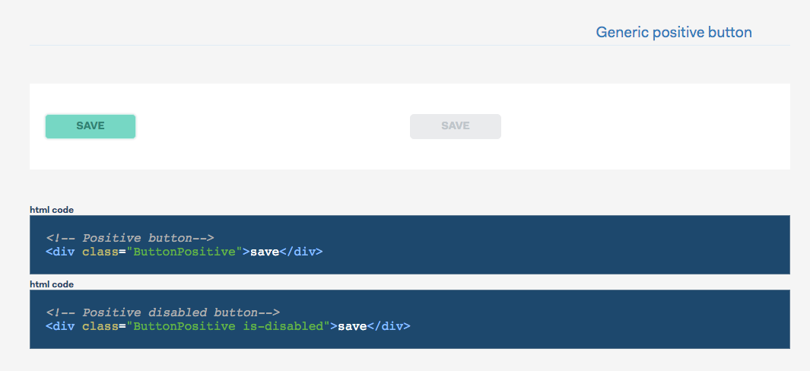
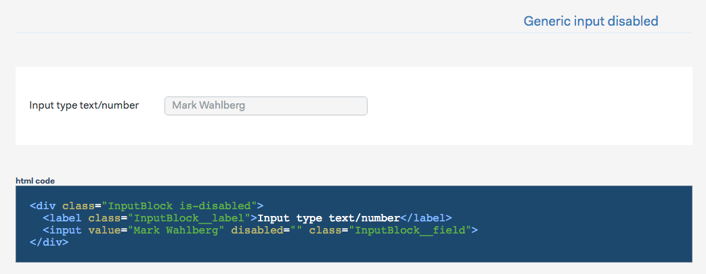
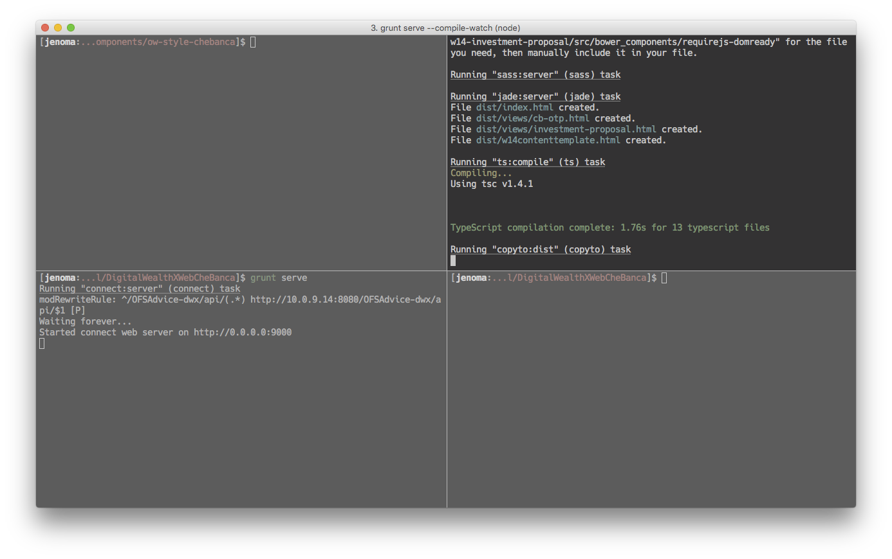
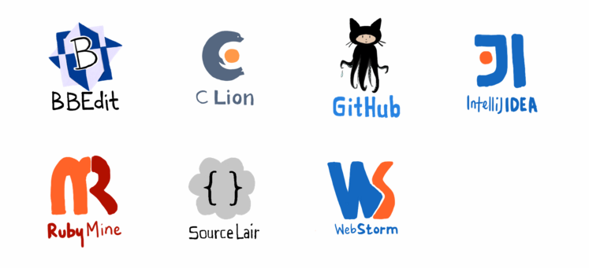
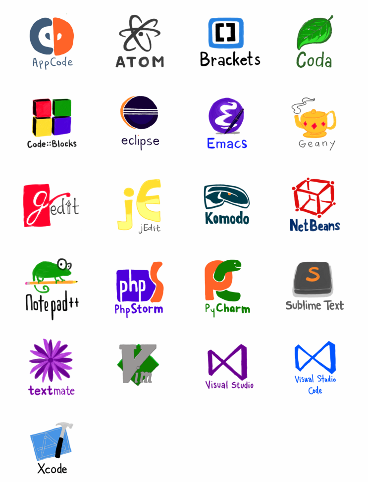

CSS AND HTML
Best practices
A brief explanation on what to do and what not to,
when writing HTML and CSS.
Created by Alessandro Vioni for Objectway.com
BEM slides by Giacomo Zinetti
WHERE ARE WE FROM
We are from a place where every coder has been sometime in its life:
The house of unmaintainable and badly written code.
WHERE ARE WE GOING
We are going in the land of
- Better knowledge of OW actual technology stack
- FED (front end development) best practices
- Explain the meaning of BEM, ITCSS, SASS, preprocessors and task runners
At the end of this course
- You'll understand how to save thousand of kittens
- You will be able to optimize your code and your projects
- You will be able to improve the maintainability of your projects
hopefully :)
HTML and CSS are EASY
- Accessible languages
- Permissive rules
It's easy to screw up a project
Modern web development is complicated, projects are huge, complexity is increasing day by day.
Just think at the number of languages, libraries and technologies for the front-end development: Nodejs, Angular, React, Jade ...
Maintenance is the key
- ALWAYS use external style sheets
- ALWAYS use external js files
- Do NOT use tables of tables of tables ...
- Use semantic class names
- Write maintainable code
- Use preprocessors
- mixins
- placeholders
- variables
- Use preprocessors
Maintenance is the key
- Limit the use of JavaScript to the strict necessary
- Use CSS whenever is possible
- Do not use js to replace CSS functionalities
Maintenance is the key
- Adopt methodologies like BEM and ITCSS
- To produce maintainable code
- Important to follow a methodology
- Use linters
- To check code
- To standardize the code written by team members
Maintenance is the key
SOME EXAMPLES
- Inline CSS is NOT maintainable
- CSS classes with inline CSS?!
- Inline CSS!
On a side note, 4 kittens died to write this code
TABLES
what's wrong with them ?- They're slow
- Hard to maintain
- They should be used for content not for layout !
Every time you are nesting a table a kitten dies...
What we should use?
- Easily maintainable code
- Atomization of the elements
- Break into small pieces of repeatable code
- Buttons, tables, form fields ...
- Atomization of the elements
SASS helps
Use of placeholders and variables can help to keep the front-end structure clean
// -----------
// DATE PICKER
// -----------
%DatePicker {
background: $white;
border-radius: 0.187em;
width: em-calc(280);
}
EXTEND!
.HeaderDateSelector {
@extend %DatePicker;
// overrides
...
}
Wrong!
Two identical elements made with different piece of code !
For example, two similar input field, two buttons...
Correct!
From the Illumas refactoring project
- Create a KitchenSink
- Create basic reusable elements
- Use them on your project :)
Input field example
WHICH MEANS
An input field usable everywhere, same structure for every similar elements on the page
Keyword: simplification
KitchenSink is the key
Write reusable elements made with reausable code
Simplify, do not overcomplicate your code
Avoid at all cost duplication
Every time you're duplicating a line of code or an element a kitten dies!
KEEP IT SIMPLE
TASK RUNNERS
The bread and butter of modern web development
What are they?
- They compile, lint, merge, clean, minify code
- They integrate with modern FED workflows because...
- ...they are CLI's (command line interface)
CLI
Most of the Front-end development nowadays is made with the use of CLI's, and most of our work involves, at some degree, the use of at least one compilator (SASS).
EMBRACE THE POWER OF THE CLI
GULP GRUNT BROCCOLI AND THE LIKES...
There are more than a few of task runners, some used more than other, the choice we made is based on speed, scripting language and reliability.


Gulp is written in Nodejs, it's probably the fastest of the group, it is extremely solid and widely used.
Hot to use Gulp
A simple task to compile SASS
npm install gulp-sass --save-dev
var gulp = require('gulp');
var sass = require('gulp-sass');
gulp.task('sass', function () {
return gulp.src('./sass/**/*.scss')
.pipe(sass().on('error', sass.logError))
.pipe(gulp.dest('./css'));
});
gulp.task('sass:watch', function () {
gulp.watch('./sass/**/*.scss', ['sass']);
});
Our Gulp structure
.
├── gulpfile.babel.js
└── tasks
├── gulp.autoreload.js
├── gulp.browsersync.js
├── gulp.clean.js
├── gulp.copy.js
├── gulp.jade.js
├── gulp.minify.js
├── gulp.sass-lint.js
├── gulp.sass.js
├── gulp.script.js
├── gulp.stylestats.js
├── gulp.svgsprite.js
├── gulp.vendor.js
└── gulp.watch.js
- Modular
- ECMAScript 6 with the aid of Babeljs
- Easier to maintain
- Some complexity could result in a steeper learning curve
But...
- We don't need this level of complexity
- We can run a basic SASS compiler with a linter...
- ...or we can customize what we have to reach the level of complexity required
Keep in mind
We can modify what we already have, we can build a custom Gulp structure we can keep it simple, we can enforce the linting of SASS files and our style guides.
Most importantly: we can write better code.

A brief explanation
Sass
Syntactically Awesome Style Sheets
What is SASS
Sass is the most mature, stable, and powerful professional grade CSS extension language in the world.
CSS COMPATIBLE
Sass is completely compatible with all versions of CSS. They take this compatibility seriously, so that we can seamlessly use any available CSS libraries.
FEATURE RICH
Sass boasts more features and abilities than any other CSS extension language out there. The Sass Core Team has worked endlessly to not only keep up, but stay ahead.
MATURE
Sass has been actively supported for over 9 years by its loving Core Team.
INDUSTRY APPROVED
Over and over again, the industry is choosing Sass as the premier CSS extension language.
LARGE COMMUNITY
Sass is actively supported and developed by a consortium of several tech companies and hundreds of developers.
FRAMEWORKS
There are endless number of frameworks built with Sass. Compass, Bourbon, and Susy just to name a few.
Some more...
- Sass definitions cannot be used directly within a browser.
- They are compiled using a “pre-processor” into standard css.
- Sass allows you to use things like variables, nested rules, inline imports and more.
- It also helps to keep things organized and allows you to create stylesheets faster.
Partials and Imports
You can create partial Sass files that contain little snippets of CSS that you can include in other Sass files. This is a great way to modularize your CSS and help keep things easier to maintain.
// _reset.scss
html,
body {
margin: 0;
padding: 0;
}
// main.scss
@import 'reset';
Nesting
.class {
.class {
...
}
}
variables
$variable = red;
Placeholders
%GenericButton {
...
}
.MyButton {
@extend %GenericButton;
}
Mixins
@mixin border-radius($radius) {
border-radius: $radius;
}
.box { @include border-radius(10px); }
Extend/Inheritance
.message {
border: 1px solid #ccc;
padding: 10px;
color: #333;
}
.success {
@extend .message;
border-color: green;
}
.error {
@extend .message;
border-color: red;
}
@if
$type: monster;
p {
@if $type == ocean {
color: blue;
} @else if $type == matador {
color: red;
} @else if $type == monster {
color: green;
} @else {
color: black;
}
}
p {
color: green; }
@for
@for $i from 1 through 3 {
.item-#{$i} { width: 2em * $i; }
}
.item-1 {
width: 2em; }
.item-2 {
width: 4em; }
.item-3 {
width: 6em; }
@each
@each $animal in puma, sea-slug, egret, salamander {
.#{$animal}-icon {
background-image: url('/images/#{$animal}.png');
}
}
.puma-icon {
background-image: url('/images/puma.png'); }
.sea-slug-icon {
background-image: url('/images/sea-slug.png'); }
.egret-icon {
background-image: url('/images/egret.png'); }
.salamander-icon {
background-image: url('/images/salamander.png'); }
@while
$i: 6;
@while $i > 0 {
.item-#{$i} { width: 2em * $i; }
$i: $i - 2;
}
.item-6 {
width: 12em; }
.item-4 {
width: 8em; }
.item-2 {
width: 4em; }
SCSS LINT
You can lint your SCSS files using scss-lint which can be configured to bring same code consistence and cleanness across the board.
It can be configured on Gulp or on many major editors (Vim, Emacs, Atom, Sublime).
Lint (software)
In computer programming, lint is a Unix utility that flags some suspicious and non-portable constructs (likely to be bugs) in C language source code;
generically, lint or a linter is any tool that flags suspicious usage in software written in any computer language.
The term lint-like behavior is sometimes applied to the process of flagging suspicious language usage.
Lint-like tools generally perform static analysis of source code.
What we lint ?
- SCSS
- JavaScript
- Typescript
- Jade
- HTML
How do we lint ?
- Editors
- Task runners (GULP)
Every linter has a configuration file that can be used to personalize many aspect of the syntax.
SCSS-LINT default configuration file it is more than 250 lines of possible configurations to bring styling uniformity between team members.
BEM
BLOCK ELEMENT MODIFIER
At this link there is a short description on how we are using BEM at Objectway.
ITCSS
ITCSS is a set of conventions for creating your css architecture. CSS definitions are grouped together in categories (layers) that reflect the different levels of specificity.
Editorconfig
What is EditorConfig?
EditorConfig helps developers define and maintain consistent coding styles between different editors and IDEs.The EditorConfig project consists of a file format for defining coding styles and a collection of text editor plugins that enable editors to read the file format and adhere to defined styles.
EditorConfig files are easily readable and they work nicely with version control systems.
# EditorConfig is awesome: http://EditorConfig.org
# top-most EditorConfig file
root = true
# Unix-style newlines with a newline ending every file
[*]
end_of_line = lf
insert_final_newline = true
# Matches multiple files with brace expansion notation
# Set default charset
[*.{js,py}]
charset = utf-8
# 4 space indentation
[*.py]
indent_style = space
indent_size = 4
# Tab indentation (no size specified)
[Makefile]
indent_style = tab
# Indentation override for all JS under lib directory
[lib/**.js]
indent_style = space
indent_size = 2
# Matches the exact files either package.json or .travis.yml
[{package.json,.travis.yml}]
indent_style = space
indent_size = 2
OW .editorconfig
# http://editorconfig.org
root = true
[*]
end_of_line = lf
indent_style = space
indent_size = 2
charset = utf-8
trim_trailing_whitespace = true
insert_final_newline = true
max_line_length = 80
[*.md]
trim_trailing_whitespace = false
[*.{html,jade}]
max_line_length = false
For Windows Users
To create an .editorconfig file within Windows Explorer, you need to create a file named .editorconfig.,
which Windows Explorer will automatically rename to .editorconfig
Compatible with most IDE and Editors
Compatible with most IDE and Editors
FINAL THOUGHTS
USE RULES
BEM, ITCSS and whatever you like, but the most important thing is... FOLLOW THEM.
LEARN THE CLI
Microsoft is adding the Linux command line to windows 10
CLI is the foundation of modern front-end development.
Using graphical tools is counter productive - most of the time - you have to use the real deal.
DESIGN ELEMENTS AND THEN USE THEM
Designers create elements, front-end create a KitchenSink, back end is using those elements as they are.
AVOID CODE/ELEMENTS DUPLICATION
Avoid at all costs code and element duplication: where an element is graphically equal to another one, but the code is different. This is, in the short term, the mother of all problems of maintainability.
PERFORMANCE
Keep an eye to performances, remove JS where is too much, do not use libraries for the sake of doing it, check network requests, image size.
UNLEARN AND RELEARN
A service doesn't just need to be functioning, but it needs to be functional and usable.
BUT MOST OF ALL
DON'T USE TABLES, DON'T DUPLICATE CODE
Kittens will thank you.